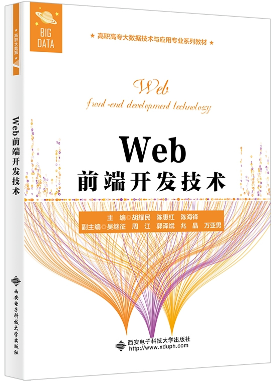

首页 > 书籍下载
《Web前端开发技术》PDF下载（高清完整版）
|  | 作者：胡耀民 |
| 出版时间：2021年08月01日 | |
| 出版社：西安电子科技大学出版社 | |
| ISBN：9787560661056 | |
| 总页数：235 | |
| 总字数：35.7W |
这是一本关于 Web 前端开发技术的基础类丛书，本书内容丰富、理论与实践相结合，非常适合初学者使用。
这里提供的是《Web前端开发技术》的高清 PDF 下载，内容完整，附带目录标签。
这本书涵盖了 HTML、CSS、JavaScript 、 jQuery、Bootstrap 等相关知识点，详细介绍了 DOM 、BOM 、JavaScript 与 HTML5 新标签搭配使用的方法和技巧，并通过jQuery、Bootstrap 框架讲解了 Web 前端网页的设计与制作方法。所以，无论你是初学者，还是有过一些开发经验的从业人员，这本书都将给你带来具大的收获！
下面是一位读者朋友对这本书的评价：
很实用的一本书，讲解非常地详细、全面，案例也很好理解，学到很多。
还有一位读者是这样说的：对项目开发帮助非常大，用来日常提升技术，又学到了一些新技能，很不错！
书籍目录
- 第1章 HTML5 基础知识
- 1.1 文档基本结构
- 1.2 文字排版
- 1.3 表单制作
- 1.4 表格和列表制作
- 1.5 超链接
- 1.6 图文混排
- 课后习题
- 第2章 CSS3基础
- 2.1 CSS3 概述
- 2.2 选择器
- 2.3 盒模型
- 2.4 样式
- 2.5 定位
- 课后习题
- 第3章 CSS3的多彩渲染
- 3.1 变形
- 3.2 动画
- 3.3 响应式布局
- 课后习题
- 第4章 JavaScript基础知识
- 4.1 认识JavaScript
- 4.2 引入JavaScript的方法
- 4.3 JavaScript语句
- 4.4 JavaScript变量
- 4.5 JavaScript数据类型
- 4.6 JavaScript运算符
- 4.7 JavaScript语句类型
- 课后习题
- 第5章 JavaScript对象和函数
- 5.1 JavaScript对象概述
- 5.2 JavaScript函数
- 5.3 JavaScript常用对象
- 课后习题
- 第6章 JavaScript开发实例
- 6.1 Canvas绘图开发实例
- 6.2 网页数据存储Web Storage开发实例
- 6.3 手风琴菜单开发实例
- 6.4 图片Modal（模态）效果设计
- 课后习题
- 第7章 jQuery技术
- 7.1 jQuery的下载和安装
- 7.2 使用jQuery进行HTML操作
- 7.3 jQuery的AJAX操作
- 课后习题
- 第8章 Bootstrap技术
- 8.1 Bootstrap的安装使用
- 8.2 Bootstrap布局
- 8.3 Bootstrap内容排版
- 8.4 Bootstrap组件
书籍下载
一键登录，免费下载完整版 PDF，文件名称：《Web前端开发技术》.pdf